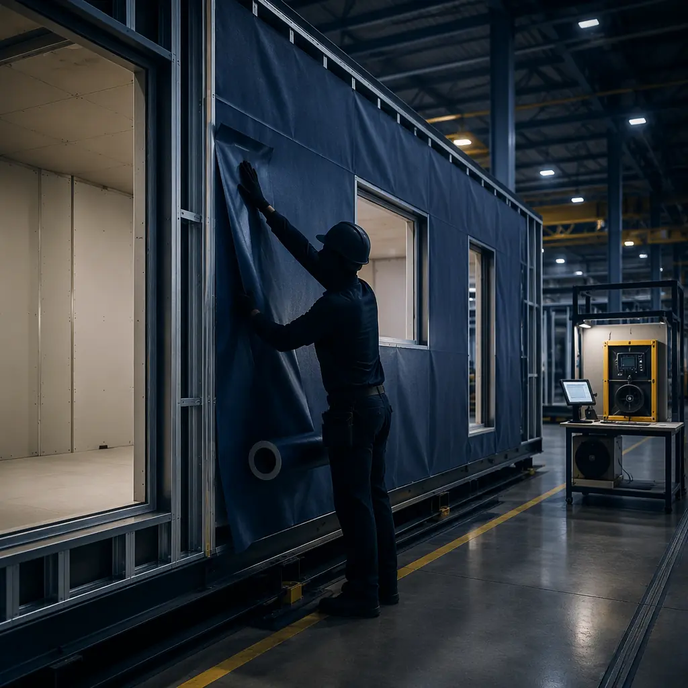
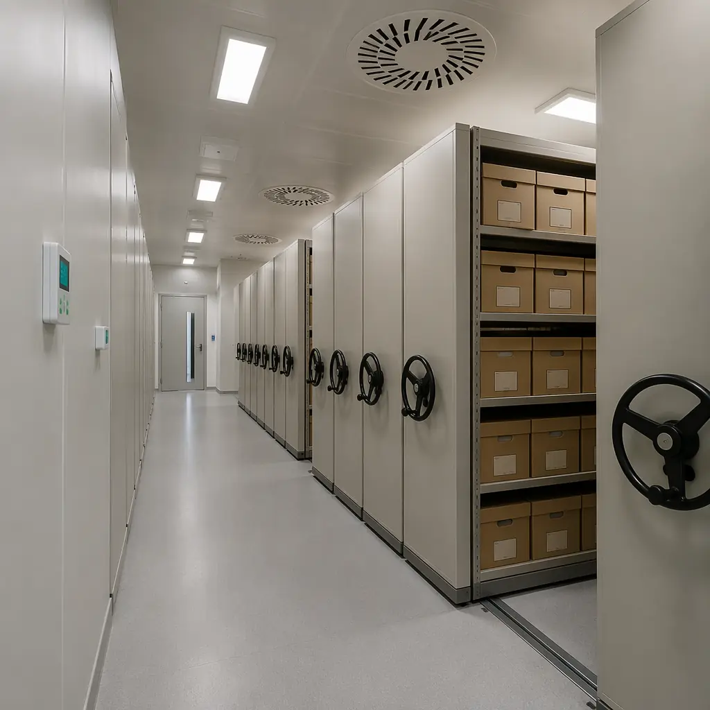
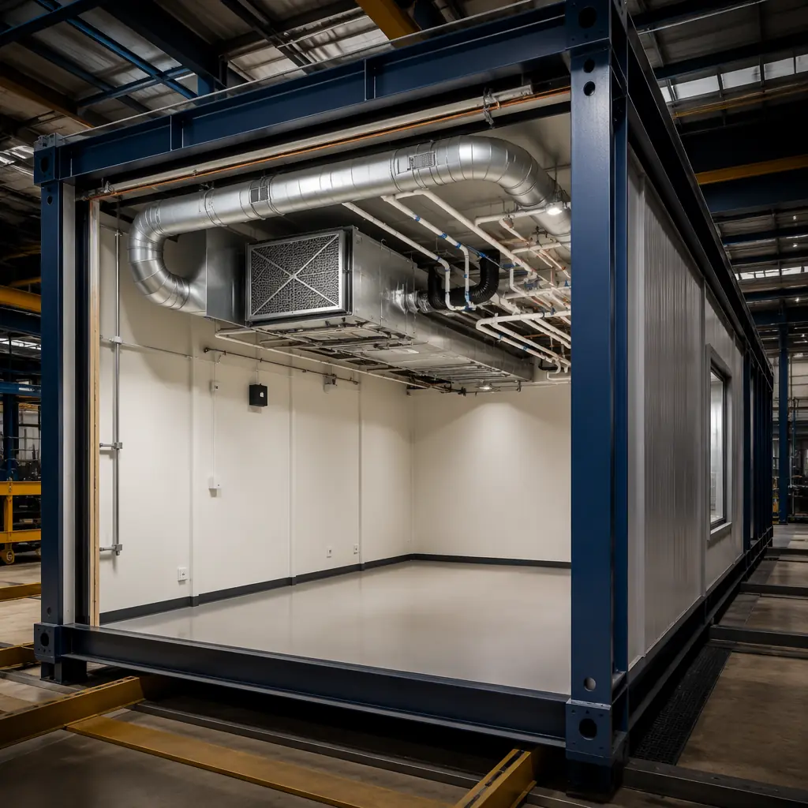

Museums, archives, and cultural heritage institutions face a construction challenge that few other building types demand: environments where temperature must not fluctuate more than ±1°C, relative humidity must hold within ±3% of setpoint, and fire suppression systems must protect irreplaceable collections without water damage. Traditional construction struggles to meet these tolerances because field-built envelope assemblies — with their inevitable installation variability, weather exposure during construction, and commissioning performed under schedule pressure — introduce moisture, thermal bridges, and air leakage that precision environmental control cannot fully overcome. Modular construction, where the envelope is assembled under factory conditions with documented quality gates at every stage, offers a fundamentally different approach to building for collections that cannot be replaced.

Why Environmental Stability Demands Factory Precision
The conservation standards for museum and archival storage are defined by ISO 11799 (Information and Documentation — Document Storage Requirements for Archive and Library Materials) and ASHRAE's Museums, Galleries, Archives, and Libraries chapter. The critical parameters:
- Temperature: 18–22°C (64–72°F) for general collections, with short-term fluctuation not exceeding ±1°C and seasonal drift limited to 3°C over 30 days. Photographic and film archives require 2–7°C (35–45°F).
- Relative humidity: 45–55% RH for most organic materials (paper, textiles, wood), with short-term fluctuation not exceeding ±3% RH. Metals require below 35% RH to prevent corrosion; parchment and vellum require 55–60% RH to prevent embrittlement.
- Air quality: Particulate filtration to MERV 13 minimum (MERV 15–16 for photographic materials), gaseous contaminant filtration for sulfur dioxide, nitrogen oxides, and ozone — all of which accelerate material degradation at the molecular level.
- Light exposure: Ultraviolet radiation below 75 µW/lumen, visible light limited to 50 lux for works on paper and textiles, 200 lux for oil paintings and wood, with complete darkness in storage areas when unoccupied.
Achieving these parameters in a traditionally built facility requires an HVAC system sized to overcome the building envelope's inherent leakage and thermal instability. An envelope with an air leakage rate of 3–5 ACH at 50 Pa — typical for well-built site construction — requires the mechanical system to continuously condition infiltration air, adding 15–25% to the HVAC capacity and 20–30% to annual energy consumption versus a tighter envelope. More critically, infiltration air brings uncontrolled moisture: a single cubic meter of outdoor air at 30°C and 80% RH contains approximately 24 grams of water vapor that the HVAC system must remove — and that removal is what drives the ±1°C temperature swings that damage collections. Our modular building envelope systems article covers the air barrier performance advantage in detail.
Modular construction achieves envelope air leakage rates of 0.5–1.5 ACH at 50 Pa — approximately 3x tighter than site-built — because every wall, floor, and ceiling assembly is built, sealed, and tested at the factory before weather exposure. The continuous air barrier is installed across the module's six sides under controlled conditions, and the module-to-module joint — the most critical air sealing detail in any modular building — is a designed, documented, and QC-inspected detail, not an improvised field sealant joint.

Fire Suppression That Protects Collections, Not Just Structures
Museum and archival fire protection faces a specific conflict: the fire suppression systems required for life safety and property protection — specifically, automatic sprinklers — are themselves a threat to collections. Water damage from sprinkler activation can destroy more material than a contained fire, and the problem compounds in high-density archival storage where compact shelving systems concentrate combustible paper materials at 5–8x the fuel load of a typical commercial occupancy.
The fire protection strategy for collection storage environments follows a layered defense:
- Compartmentalization. Modular construction's inherent compartmentalization — each module is its own fire compartment with independently rated walls, floor, and ceiling — limits fire spread beyond the module of origin. A fire in one storage module, contained by 2-hour fire-rated walls, does not propagate to adjacent modules housing different collections. This is the structural equivalent of storing collections in separate buildings, achieved within a single facility.
- Gaseous suppression in high-value storage. For irreplaceable collections (rare manuscripts, photographic negatives, type specimens), modular vault rooms equipped with inert gas suppression systems (IG-55 argon/nitrogen mix, or Novec 1230 fluoroketone) extinguish fire without water, foam, or chemical residue. The factory integration of gas-tight room construction — continuous vapor barrier, pressure-relief dampers, and post-discharge extraction ductwork — is far more reliable than field construction, where gas-tightness testing often reveals leakage paths that require costly post-installation remediation.
- Very Early Smoke Detection (VESDA). Aspirating smoke detection systems sample air continuously through a pipe network, detecting combustion particles at concentrations 1,000x lower than conventional spot detectors. In modular construction, the VESDA pipe network is pre-installed in the factory, with sampling points precisely positioned relative to storage racking layouts — a level of integration precision that field installation onto an existing structure cannot match.
- Pre-action sprinklers as last resort. Where code requires automatic sprinklers, pre-action systems keep water out of the pipes until two independent events occur: smoke detection AND sprinkler head activation. This eliminates accidental discharge from mechanical damage while providing code-compliant fire suppression if gaseous systems are exhausted. Our modular fire safety article covers fire-rated assembly performance and suppression integration in depth.

Security Integration: From Factory to Facility
Museum and archival facilities require layered physical security: perimeter intrusion detection, access control with multi-factor authentication at collection storage zones, vibration sensors on walls and roof, and video surveillance with 90-day retention. The challenge in traditional construction is that security system cabling, conduit pathways, and sensor mounting points must be coordinated across the general contractor, electrical subcontractor, low-voltage subcontractor, and security system integrator — four different trades working sequentially, with each depending on the previous trade's work being complete and correct before they can proceed.
Modular construction integrates security infrastructure at the factory. Conduit pathways for access control cabling, sensor mounting backboxes and blocking, equipment rack locations with structured cabling home runs, and security-rated door frames and hardware are all installed and tested at the module level. The security system integrator commissions the system after module installation, but the physical layer — every cable pathway, every sensor backbox, every door contact — is factory-installed and documented. The result is a security infrastructure that is built to a documented design rather than field-interpreted from drawings, and the commissioning burden shifts from "find all the missing backboxes and blocked conduits" to "verify that the installed infrastructure matches the system design."
This integration extends to the building enclosure. Collection storage areas require full-perimeter security — walls, floor, ceiling, and roof — with no undetected penetration paths. In traditional construction, the security perimeter is only as strong as the coordination between the GC (building envelope), the MEP contractor (roof penetrations for HVAC, plumbing vents), and the security contractor (who arrives last and discovers penetrations that bypass the security layer). In modular construction, every through-wall penetration for MEP services is pre-coordinated at the factory engineering stage, routed through designated security zones, and verified before the module leaves the factory.
Construction Without Contamination: Protecting Collections During the Build
A risk specific to museum and archive construction that is almost never discussed in construction planning: the construction process itself releases contaminants that damage collections. Concrete pours release alkaline dust that attacks paper and textiles. Welding and cutting produce airborne metal particles that catalyze material degradation. Paint and adhesive off-gassing introduces volatile organic compounds (VOCs) that accelerate paper acidification. In traditional construction, where the building enclosure is assembled on-site over 12–18 months, the interior environment is exposed to construction contaminants for the entire duration — and even after construction, residual contaminants embedded in porous materials (concrete, drywall compound, acoustic ceiling tile) off-gas for 6–12 months before the environment stabilizes to archival standards.
Modular construction fundamentally changes this equation. Modules arrive on site with interior finishes complete — gypsum board painted, flooring installed, millwork mounted — and the interior has never been exposed to on-site construction contaminants. The module interior experienced factory air quality (filtered, controlled) throughout its assembly, not the diesel exhaust, concrete dust, and welding fumes of an active construction site. After module setting and inter-module joint finishing, the building requires approximately 2–4 weeks of HVAC operation to stabilize to archival environmental conditions — versus 6–12 months for a traditionally built facility.
For institutions planning to move collections into new storage, this accelerated stabilization timeline has direct operational value: collections can be relocated months earlier, reducing the duration and cost of temporary storage, and the risk of contaminant-induced degradation during the settling-in period is dramatically lower. Our clean room construction article covers contamination control principles that apply directly to archival environments.
Cost Framework: Comparing Museum-Grade Construction Methods
Museum and archival facilities are among the most expensive building types per square foot because they combine demanding structural requirements (high floor loading for compact shelving: 150–250 psf vs 40–50 psf for offices), precision MEP systems (close-tolerance HVAC with N+1 redundancy), sophisticated fire protection (gaseous suppression, VESDA, pre-action sprinklers), and layered security infrastructure. The construction method choice significantly impacts both capital cost and operational cost over the facility's 50-year design life:
| Cost Element | Modular Construction | Traditional Site-Built |
|---|---|---|
| Construction cost (50,000 sqft facility) | $425–575/sqft | $450–625/sqft |
| Construction schedule | 12–16 months | 18–26 months |
| Environmental stabilization post-construction | 2–4 weeks | 6–12 months |
| Annual HVAC energy (achieving ±1°C, ±3% RH) | $2.50–3.50/sqft (0.5–1.5 ACH envelope) | $3.50–5.00/sqft (3–5 ACH envelope) |
| 50-year energy cost difference | Baseline | +$2.5M–3.8M (50,000 sqft) |
| Security & fire suppression integration | Factory-installed, pre-commissioned at module level | Field-coordinated across 4+ trades, commissioning-intensive |
The modular premium — the 5–10% lower capital cost — comes from compressed schedule (reduced general conditions and construction loan interest), reduced defect rework (factory QC catches issues before they reach the site), and trade coordination efficiency (factory integration eliminates the GC→electrical→low-voltage→security sequential dependency). The operational savings over the facility's life — $2.5–3.8 million in energy alone for a 50,000 sqft building — come from the tighter envelope that modular's factory-built air barrier delivers. Our cost per square foot guide and lifecycle cost analysis provide detailed cost frameworks applicable to institutional construction.

Who Should Consider Modular for Museum and Archival Construction
Modular construction for museums and archives is not universally applicable. The technology is well-suited to specific project profiles, and developers and institutions should evaluate fit against these criteria:
- Collection storage and conservation facilities. The primary use case. These buildings are essentially high-performance warehouses with precision environmental control — a program type that maps directly to modular construction's strengths in repetitive, controlled-environment module production. Off-site collection storage, where the facility does not need to be architecturally expressive (since it is not publicly accessible), is the strongest fit.
- Museum support and back-of-house spaces. Conservation labs, photography studios, collection processing areas, and research spaces within museum campuses. These spaces require the same environmental performance as storage but at smaller scale and with specialized MEP requirements (fume hoods in conservation labs, color-critical lighting in photography studios). Modular delivery reduces disruption to operating museum facilities during construction.
- Exhibition galleries with standardized environmental requirements. Gallery spaces that house light-sensitive and climate-sensitive collections benefit from the same envelope performance advantages, but the architectural requirements — ceiling heights, column-free spans, circulation flow — may exceed module dimensions. A hybrid approach (modular support spaces, conventional gallery construction) is often optimal for mixed-use museum buildings.
- Rapid-deployment collection storage for emergency relocations. When a museum must vacate its existing storage due to renovation, flood risk, or structural issues, modular construction can deliver a fully conditioned, secure collection storage facility in 6–9 months — versus 18–24 months for traditional construction. This timeline difference can eliminate 12+ months of expensive temporary storage in third-party art handling facilities. Our emergency deployment article covers the rapid-deployment framework applicable to emergency collection relocation scenarios.
For institutions managing irreplaceable collections — where a single environmental excursion can cause irreversible damage, where fire protection must serve collections as well as structures, and where security infrastructure must be integral to the building rather than retrofitted onto it — modular construction's factory precision, documented quality control, and integrated systems delivery offer a level of performance assurance that traditional construction's site-dependent variability cannot match.